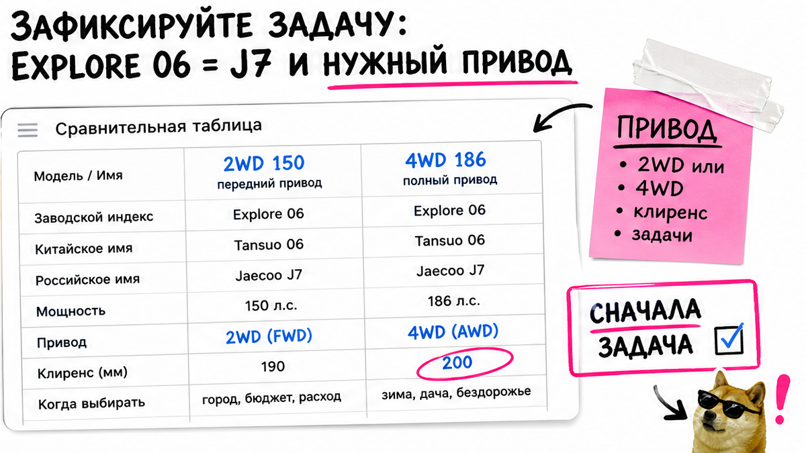
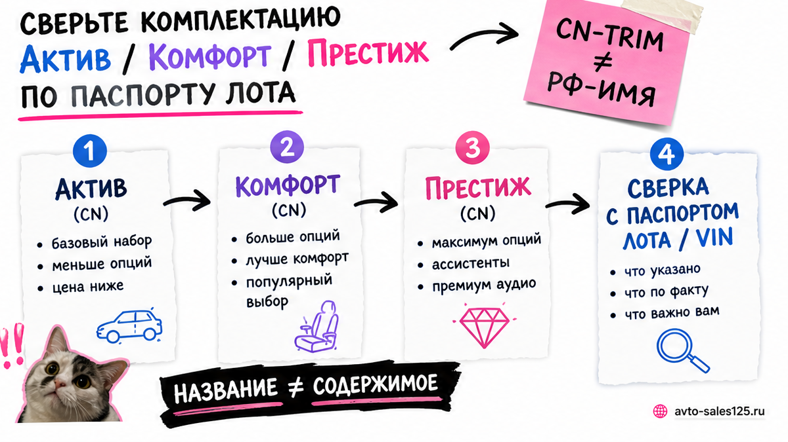
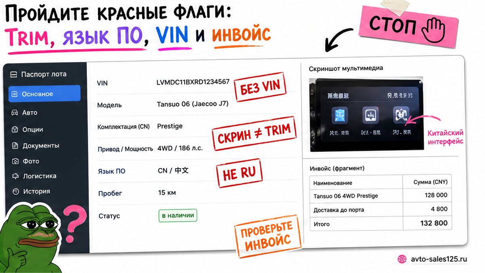

Антон из Хабаровска уже тянулся к переводу: в Telegram светился "Jaecoo J7 Престиж 4WD дешевле дилера". Боль знакомая – боишься перепутать китайское имя Explore 06 с российским Jaecoo J7, взять не тот привод или "Престиж по скрину" и отдать депозит за машину, которую потом стыдно принимать во Владивостоке. Сначала чеклист, потом деньги: ниже – как до депозита самому зафиксировать задачу, сверить паспорт лота и поставить одно решение – ставлю / жду / отказываюсь.
Коротко до депозита: Chery Explore 06 / Tansuo 06 на внешних рынках – это Jaecoo J7. Выберите бензин 2WD 150 л.с. или 4WD 186 л.с. и уровень Актив / Комфорт / Престиж по списку опций, а не по красивому фото. Депозит – только после договора с юрлицом, сметы "под ключ", VIN и понятного маршрута через Владивосток.
Мы в Авто-Сейлс у роллкера во Владивостоке часто видим одну и ту же ошибку: человек сравнивает "магическую" цифру из чата с дилерским прайсом и уже переводит на карту менеджера. На практике в паспорте лота всплывает Explore 06 2WD без люка, с китайским языком меню, а "полный привод" оказывается догадкой по скрину. После сверки VIN и списка опций Антон выбрал "жду уточнений" вместо перевода – и правильно сделал.
Свежий нюанс, который ломает интуицию: полный привод у Jaecoo J7 не даёт больший клиренс. Наоборот, у 4WD дорожный просвет обычно около 186 мм против примерно 196 мм у 2WD. Плюс гибрид SHS / PHEV на многих рынках идёт только передним приводом, хотя в чате его любят продавать как "тот же J7, только выгоднее".

В Китае модель известна как Chery Tansuo 06 / Explore 06; на экспортных рынках – Jaecoo J7. Рядом крутятся похожие имена вроде Tiggo 7 High Energy или Fulwin T6 / C-DM – это уже соседние истории, не ваш бензиновый J7. Запишите одной строкой: "беру Jaecoo J7 / Explore 06, бензин, не гибрид и не другую Chery/Omoda".
Дальше – привод и мощность по задаче, без статуса "у соседа полный". Для города и трассы чаще хватает 2WD 1.6T на 150 л.с. Для снега, грунтовки и северных зим разумнее смотреть 4WD 1.6T на 186 л.с. Типичная ошибка – брать 4WD "на всякий случай" и удивляться, что клиренс ниже, чем у переднеприводной версии.
| Параметр | 2WD 150 л.с. | 4WD 186 л.с. |
|---|---|---|
| Кому ближе | город, трасса, ровный асфальт | снег, грунт, уверенность зимой |
| Клиренс (ориентир) | около 196 мм | около 186 мм |
| РФ-уровни 2026 | Актив, Престиж | Комфорт, Престиж |
| Не путать с | PHEV "как будто полный" | "Престиж по скрину" без VIN |
Делать: выберите привод до поиска лота и запишите мощность. Не делать: верить подписи "4WD" на фото без строки в паспорте лота и без VIN.

В РФ-линейке 2026 рестайлинга обычно так: Актив и Престиж идут на 2WD 150, Комфорт и Престиж – на 4WD 186. Зимний пакет (подогревы сидений, руля, лобового, форсунок, дистанционный прогрев) уже встречается в Актив. Комфорт ближе к "повседневке": камеры 540, электробагажник, беспроводная зарядка, голос. Престиж добавляет люк, вентиляцию переда, подогрев второго ряда и расширенных ассистентов на 4WD-версии.
Например, в чате пишут "Престиж", а в CN-trim лота нет люка и вентиляции – значит, это уже другой разговор о цене. Китайские названия Urban / Prestigious / похожие слова не равны автоматическому "Престиж РФ". Сверяйте железо: зимний пакет, камеры, люк, вентиляция, электробагажник – списком напротив договора.
Делать: соберите чеклист опций до запроса лота. Не делать: покупать "уровень trim" по скрину салона из переписки.
Схема выбора комплектации:
Задача (город / зима) → Привод 2WD 150 или 4WD 186 → Список must-have → Паспорт лота → Совпадение с договором

Депозит ломает нервы, когда после оплаты выясняется, что VIN в договоре один, а в инвойсе другой, или мощность не та. Импортёрская логика простая: названия версий похожи, железо сверяют по VIN – мотор, коробка, привод.
Запросите паспорт лота целиком: VIN, мотор / коробка / привод, CN-trim, год, цвет, язык ПО, фото салона и экранов. Одно и то же число VIN должно стоять в договоре, инвойсе и на табличке. Мощность и привод обязаны совпадать с вашей задачей из первого шага.
Делать: гоняйте красные флаги до перевода. Не делать: верить фразе "сегодня или цена вырастет", пока нет пакета документов.
Если сами не хотите сверять CN-trim и VIN, откройте каталог Авто-Сейлс или напишите в Telegram avtosales125 до оплаты – без форм на этой странице.
Сравнивать одну сумму из Telegram с витриной дилера – почти всегда проигрышная привычка. Дилерский PDF даёт ориентир по РФ-комплектациям и часто пишет "от …" с трейд-ин оговорками на дату прайса; это не оферта "под ключ из Китая". Импортёрская смета должна раскладываться по статьям: авто, логистика, таможня и утиль, услуги. Готовые суммы пошлин и утильсбора в статье не публикуем – актуальный расчёт берите в каталоге.
Ориентир сроков у разных импортёров часто называют порядка 30–60 дней "под ключ" – проверяйте цифру в договоре, не как гарантию блога. Маршрут через Владивосток должен быть понятен: кто встречает, где СВХ, кто отвечает за выдачу.
Делать: сравните структуру цены, а не одну красивую цифру. Не делать: копировать чужой "калькулятор из чата" в договор как истину.
Workflow до денег:
Задача и привод → Must-have опции → Паспорт лота + VIN → Смета по статьям → Дилерский прайс как ориентир → Решение ставлю / жду / отказ
Вот пошаговый маршрут, который новичок сможет пройти сегодня без команды разработчиков и без паники.
Критерий результата простой: в заметках есть привод + мощность + уровень trim + что должно быть в зимнем пакете / камерах / люке; договор и смета без магической одной цифры; красных флагов нет или осознанный отказ. Базовый чеклист заказа из Китая до депозита также полезно сверить с общим гайдом по депозиту.
Нужен живой подбор под ключ – зайдите в каталог avto-sales125.ru до перевода. Форм на странице нет: расчёты и бронь живут в каталоге и переписке.
Материал проверен: Редакция Авто-Сейлс (эксперты по авто под заказ из Японии, Кореи и Китая).
Достоверность: сверка с официальным прайсом JAECOO J7 (PDF на 19.10.2026), обзорами комплектаций 2026, каталогами клиренса Auto.ru / Дром и импортёрскими чеклистами VIN до оплаты; актуальные расчёты "под ключ" – в каталоге Авто-Сейлс.
По сути это одна платформенная семья: в Китае чаще пишут Chery Explore 06 / Tansuo 06, на внешних рынках – Jaecoo J7. До депозита явно исключите соседние имена (High Energy, Fulwin / C-DM), если вам нужен бензиновый J7.
Выберите по задаче: город и трасса – 2WD 150; снег и грунт – 4WD 186. Помните про меньший клиренс у полного привода и не путайте бензиновый 4WD с гибридом на переднем приводе.
Паспорт лота с VIN, мотор / коробка / привод, список опций (зимний пакет, камеры, люк), язык ПО, совпадение VIN в договоре и инвойсе, смету по статьям и юрлицо на расчётный счёт.
Нет. Проверьте опции списком в паспорте лота. Нет люка, вентиляции или камер при обещании топа – торгуйте заново или отказывайтесь до перевода.
Сравнивайте структуру: авто + логистика + таможня/утиль + услуги против дилерского прайса с оговорками. Точную смету запросите в каталоге Авто-Сейлс – статичные суммы пошлин здесь не публикуем.
Только на расчётный счёт юрлица после договора, сметы и сверки VIN. Карта менеджера, "потом договор" и давление "сегодня или цена вырастет" – повод выбрать "жду" или "отказ".